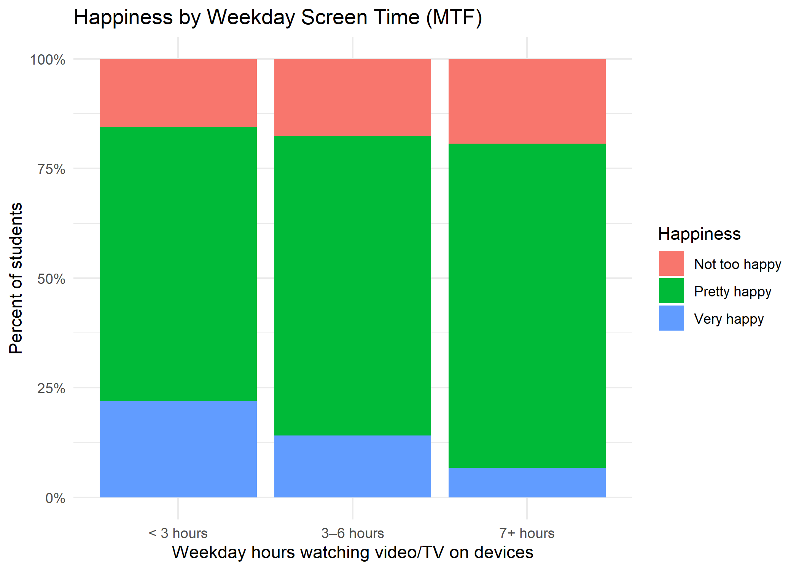
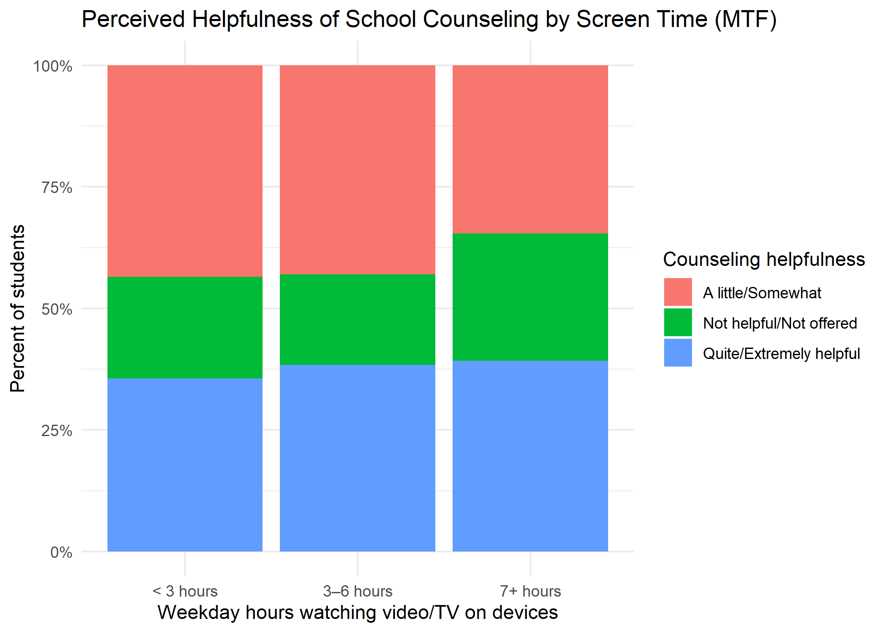
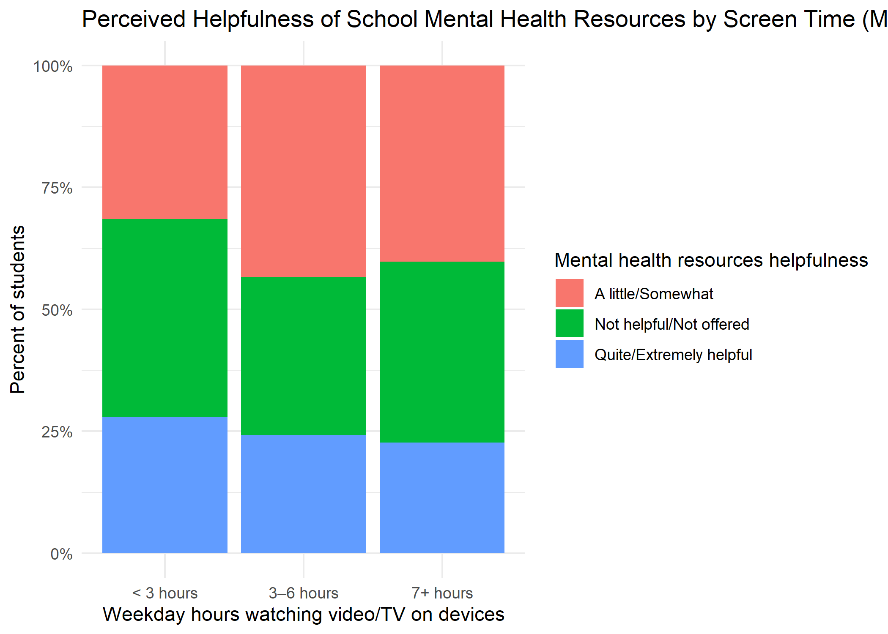

Monitoring the Future (MTF) Dashboard
Happiness by Weekday Screen Time
Perceived Helpfulness of School Counseling by Screen Time
Perceived Helpfulness of School Mental Health Resources by Screen Time
Screen Time by Gender (YRBS 2021)
The chart below shows the proportion of U.S. high school students who report spending 3+ hours of daily screen time outside of schoolwork, broken down by gender, using nationally representative YRBS 2021 data.